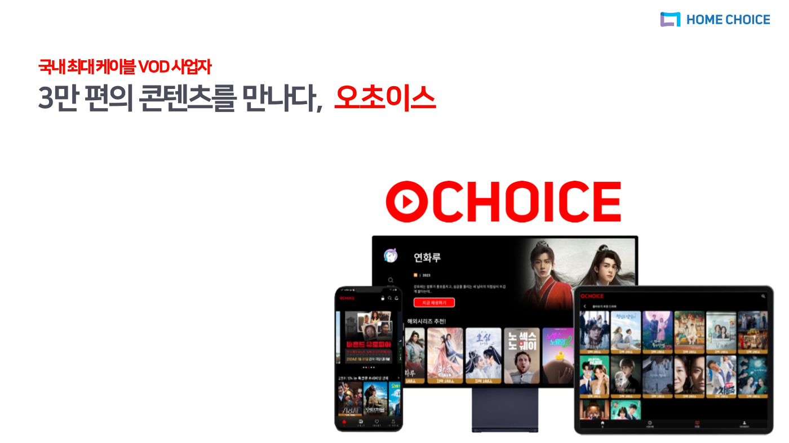
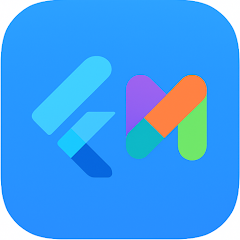
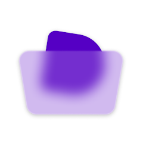
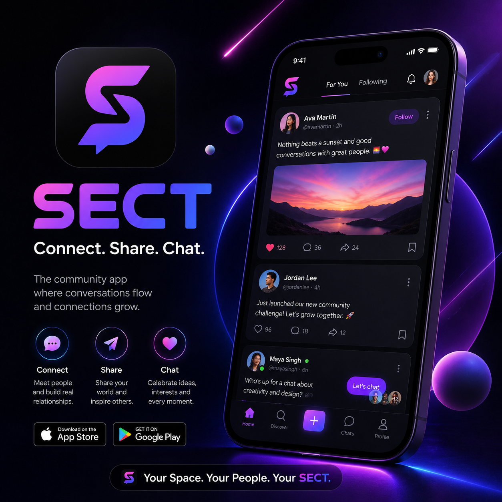

Flutter UI 구현
Widget Tree, 반응형 레이아웃, 화면 상태를 고려해 iOS와 Android에서 일관된 UI를 구현합니다.
Flutter · Dart · iOS/AOS
오초이스 OTT 앱 운영 경험과 현재 진행 중인 SECT 커뮤니티 앱 개발을 바탕으로 사용자 흐름이 자연스러운 모바일 화면과 안정적인 배포 결과를 만듭니다.
기획 의도를 화면 구조로 바꾸고, API 데이터가 사용자에게 자연스럽게 닿도록 구현합니다.
Widget Tree, 반응형 레이아웃, 화면 상태를 고려해 iOS와 Android에서 일관된 UI를 구현합니다.
REST API 호출, JSON 파싱, Provider 기반 상태 관리를 통해 콘텐츠 목록과 상세 데이터를 안정적으로 표시합니다.
스토어 배포, QA 피드백 반영, 운영 중 이슈 대응까지 서비스가 실제 사용자에게 전달되는 과정을 챙깁니다.
Google Play 출시 앱부터 현재 진행 중인 커뮤니티 앱, 실제 운영했던 OTT 앱 경험을 함께 정리했습니다.

국내 최대 케이블 VOD 사업자인 홈초이스의 오초이스 앱에서 콘텐츠 탐색, 재생, 기기 연동을 고려한 OTT 서비스 화면을 개발·유지보수했습니다.

Flutter multiFlutter로 구현한 멀티 기능 앱으로, 다양한 화면 구성을 한 앱 안에서 직접 확인할 수 있도록 만들었습니다. Android 릴리즈 빌드부터 Google Play 등록까지 배포 전 과정을 직접 진행했습니다.

담아구독 중인 상품을 한 곳에서 관리하고, 커뮤니티와 콘텐츠 순위를 통해 구독 생활을 더 전략적으로 다룰 수 있도록 만든 생산성 앱입니다. 트레일러 영상을 포함해 앱의 핵심 흐름을 스토어에서 직접 소개합니다.

Connect, Share, Chat을 핵심 메시지로 하는 커뮤니티 앱입니다. 피드, 팔로우, 공유, 채팅 흐름이 한 화면 경험으로 이어지도록 설계하고 있습니다.
화면 완성도와 운영 안정성을 함께 보는 방식으로 작업합니다.
사용자 흐름, 데이터 종류, 예외 상태를 먼저 정리해 화면 단위 구현 범위를 명확히 잡습니다.
재사용 가능한 컴포넌트와 상태 관리를 분리해 화면 변경과 데이터 갱신을 안정적으로 처리합니다.
기기별 화면 확인, 오류 상황 보완, 스토어 배포 체크까지 실제 서비스 관점에서 마무리합니다.